A heliochronometer is a sundial that tells standard mean time by computing a correction from local real time via a mechanical mechanism.
Standard mean time is the time we use in everyday life, where all hours have the same length regardless of the season. Regular sundials tell local real time which is determined directly by the motion of the sun (when the sun is at its highest it is noon in local real time).
The heliochronometer uses information such as the observer’s latitude and longitude, the position of true north, as well celestial mechanics and an astronomical formula called the Equation of Time to compute standard mean time.
The heliochronometer was invented by James Gibbs around 1906
The heliochronometer solved the need to set mechanical wristwatches all over England to Greenwich mean time
Gibbs partnered with William Pilkington to produce the Pilkington & Gibbs Heliochronometer
Less than a thousand Heliochronometers were made, of which about fifty exist today
Original Heliochronometers are still accurate today, over a hundred years later
The heliochronometer is an elegant mechanical device. It is more than a simple machine. It is a device to mark the hours, an optical instrument, and a mechanical computer. Embedded within the heliochronometer is the motion of our plant around the sun. Its body is aligned with the cardinal directions and its angles tuned to this location. When you align the sight with the sun’s rays you begin to understand the place you occupy in our solar system.
To compute standard mean time the heliochronometer makes use of several pieces of information: the observer’s latitude, the hour angle of the sun, the observer’s longitude, the direction of true north, the month of the year, and the declination of the sun.
To tell the time the heliochronometer needs to be able to precisely located the sun within a reference coordinate system
The heliochronometer uses the Equatorial coordinate system. The sun is located via two angular measurements τ and δ
The hour angle τ is the angle between the meridian and the star measured on the equator
The declination δ is the angular distance from the equator
The angle stands that support the dial have been manufactured so that the dial lies in a plane parallel to the equator. The angle ω is the colatitude and ϕ is Palo Alto’s latitude 37.43∘.
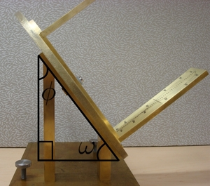The base of the dial is rotated so that the angle stands are aligned with the meridian. The smaller block faces toward north and the larger block faces south.
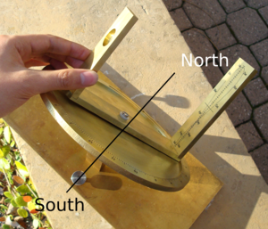When the sight is rotated so that the sun’s light travels through the pinhole in the front sight and hits the center of the back sight the pointer measures the angle τ
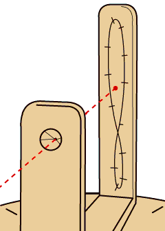
The angle τ is proportional to the local real time
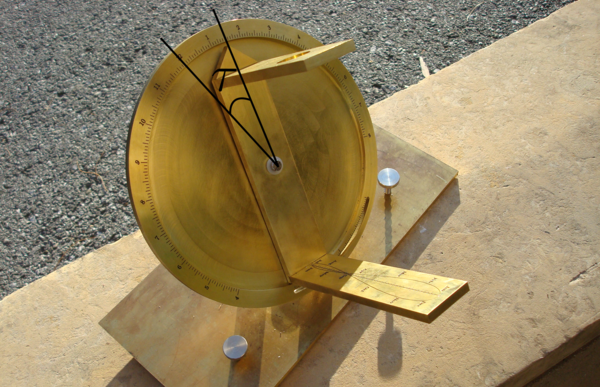The earth is divided into time zones each approximately 15∘ degrees of longitude wide
Under standard mean time the time within a time zone is that of a reference meridian. For the Pacific Time Zone the reference meridian is at 120∘ W Longitude. Palo Alto is at 122∘ W Longitude.
From the perspective of an observer west of the reference meridian the sun appears to be slow by four minutes per degree of longitude
To adjust for this effect the dial is rotated by the longitudinal offset from the reference meridian and locked into place with the circumference screw
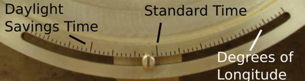From March to November clocks are adjusted forward one hour for Daylight Savings Time. To adjust for DST the dial is rotated 15∘. The longitudinal offset is then based off the daylight savings time mark rather than the standard time mark.
The Equation of Time is an astronomical formula for the difference between local real time and standard mean time over the course of the year
The difference is due to two effects: the eccentricity of the Earth’s orbit and the obliquity of the Earth’s rotational axis
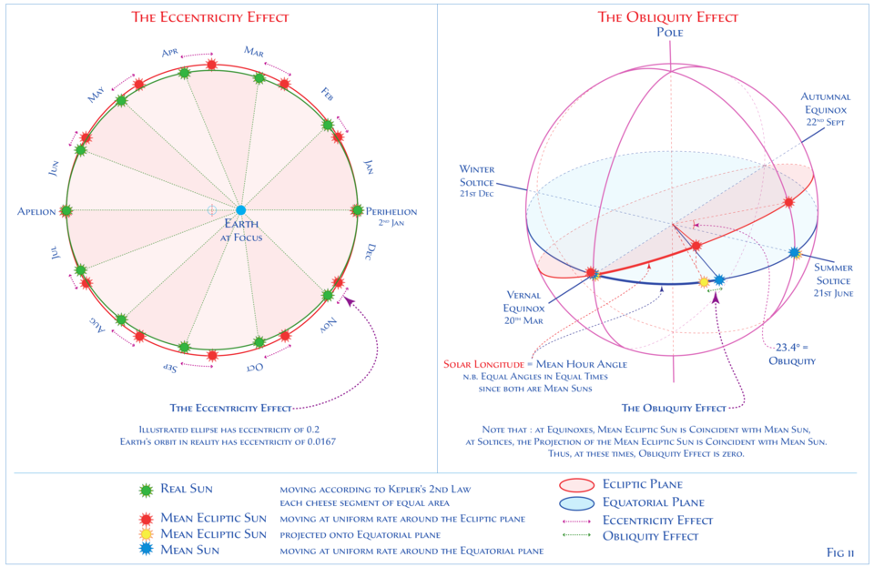The engraving on the back sight is a curve called the analemma that adjusts for the equation of time
The vertical axis is the sun’s negated declination −δ
The horizontal axis is the correction from local real to standard time due to the equation of time
To compute standard mean time rotate the sight so that the beam of light is centered on the portion of the analemma corresponding to the current month of the year
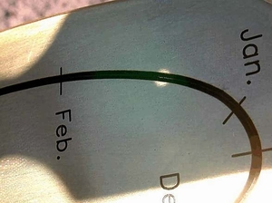The analemma can also be seen by taking a picture of the sun each day at noon over the course of a year
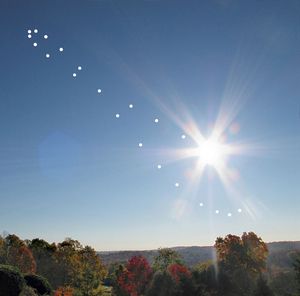The design of the heliochronometer is based entirely off the 1906 and 1911 patents, a 1923 sundial construction treatise, and pictures of similar bespoke heliochronometers made by two modern craftsmen
A significant amount of the design work involved reverse engineering these previous heliochronometers
The sights and pointer were designed using numerical optimization. A nonlinear program with ten variables and ten constraints was used to find a design that maximized the distance between the two sights, subject to constraints imposed by the analemma, the width of the pointer and the inner radius of the dial.
A complete CAD model of the heliochronometer was constructed including each of the eight hidden fasteners.
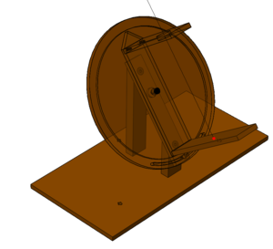 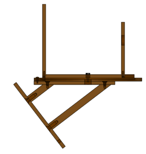Nine brass parts were manufactured on the milling machine, rotary table and lathe: the dial plate, the dial support plate, the tall latitude angle stand, the short latitude angle stand, the front sight, the back sight, the pointer, the concentric rotation half threaded rod, and the base plate
Two additional acrylic parts were constructed for fixturing: a 37.43∘ angle block for machining the latitude angle stands, and a alignment plate for engraving the dial. These were made on the LaserCAMM.
The most difficult parts to manufacture were the dial plate and the hidden concentric rotation half-threaded rod
The dial plate was manufactured on the rotary table. It took several session to machine and had to fixtured and centered before each session
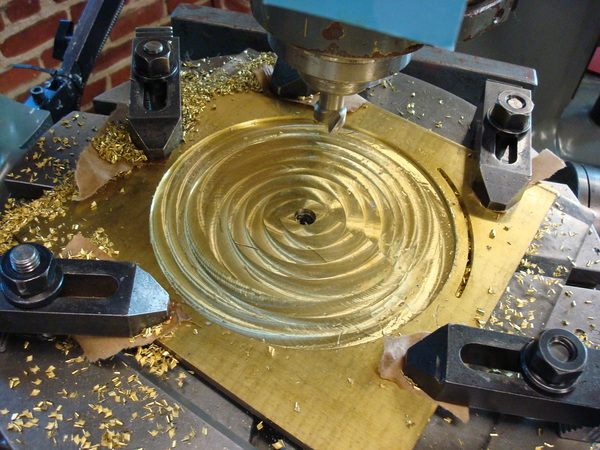The half-threaded rod that enables concentric rotation of the dial and sight was difficult to machine due to its small size and its internal and external threads
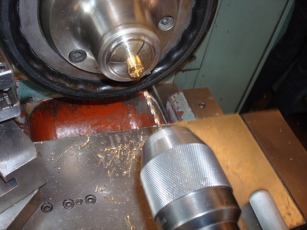The engravings on the dial and back sight were done by Tom and Cathy Nyren of Tanner’s Engraving in San Jose
The nose cone of the CNC engraver rides on the surface of the workpiece
The engraving tool extends .005” below the cone and into the workpiece